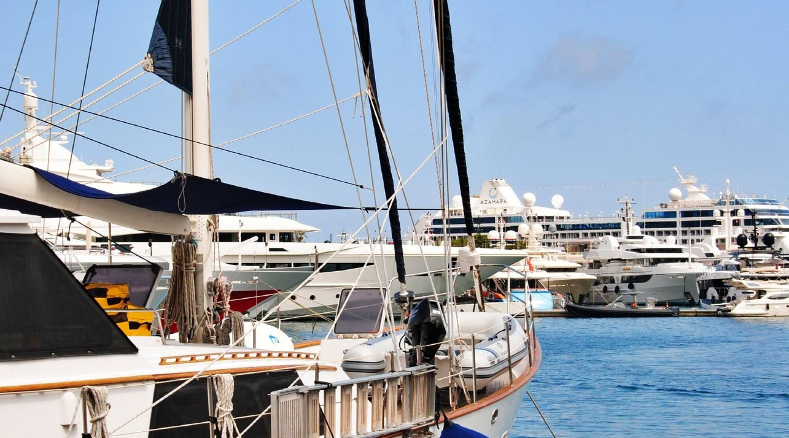

Εκδρομές με σκάφος από τον Πειραιά
Το Αιγαίο, μια μέρα τη φορά
Μικρές παρέες, έμπειροι καπετάνιοι και θάλασσα που τη γνωρίζουμε από παιδιά.
Δείτε τις εκδρομές Ιδιωτική ναύλωση
- 4,9 / 5 από 1.200+ κριτικές
- Εγγύηση καιρού
- Άμεση επιβεβαίωση
Βρείτε την εκδρομή σας
Εκδρομές
Διαλέξτε τη δική σας μέρα στη θάλασσα
-
Δημοφιλές
Πρωινό κολυμβητικό
Τρεις όρμοι πριν ζεστάνει η μέρα.
4 ώρες Μαρίνα Ζέας · Οδυσσέας
από 50,00 € / άτομο
Δείτε την εκδρομή: Πρωινό κολυμβητικό -
Για δύο
Ρομαντικό δείπνο εν πλω
Δύο άτομα, ένα τραπέζι στην πλώρη.
3 ώρες 30 λεπτά Μαρίνα Ζέας · Ποσειδώνας
από 50,00 € / σκάφος
Δείτε την εκδρομή: Ρομαντικό δείπνο εν πλω -
Ιδιωτική ημέρα με σκάφος
Το σκάφος δικό σας, η διαδρομή δική σας.
8 ώρες Μαρίνα Ζέας · Αμφιτρίτη
Τιμή κατόπιν ζήτησης
Δείτε την εκδρομή: Ιδιωτική ημέρα με σκάφος
Όλες οι εκδρομές
-
Ρομαντικό
Ηλιοβασίλεμα στην Αίγινα
Τρίωρη κρουαζιέρα με παραδοσιακό καΐκι.
3 ώρες Μαρίνα Ζέας · Οδυσσέας
από 50,00 € / άτομο
Δείτε την εκδρομή: Ηλιοβασίλεμα στην Αίγινα -
Ιδιωτική ναύλωση ημέρας
Ολόκληρο το σκάφος, δικό σας για μια μέρα.
8 ώρες Μαρίνα Ζέας · Ποσειδών
από 50,00 € / σκάφος
Δείτε την εκδρομή: Ιδιωτική ναύλωση ημέρας -
Απογευματινό ψάρεμα
Με τον καπετάνιο και τα σύνεργά του.
5 ώρες Μαρίνα Ζέας · Γαλήνη
από 50,00 € / άτομο
Δείτε την εκδρομή: Απογευματινό ψάρεμα -
Σπηλιές και όρμοι
Με ταχύπλοο εκεί που δεν φτάνουν τα μεγάλα.
3 ώρες Μαρίνα Ζέας · Θαλασσινός
από 50,00 € / άτομο
Δείτε την εκδρομή: Σπηλιές και όρμοι -
Ιστιοπλοΐα με πανιά
Χωρίς μηχανή, μόνο αέρας.
7 ώρες Μαρίνα Ζέας · Ναυσικά
από 50,00 € / άτομο
Δείτε την εκδρομή: Ιστιοπλοΐα με πανιά -
Μεταφορά στο νησί
Απευθείας, χωρίς στάσεις.
1 ώρα 30 λεπτά Μαρίνα Ζέας · Αίολος
Τιμή κατόπιν ζήτησης
Δείτε την εκδρομή: Μεταφορά στο νησί -
To the Moon and Back
5 ώρες Μαρίνα Αλίμου · Αίολος
από 20,00 € / άτομο
Δείτε την εκδρομή: To the Moon and Back
Πώς λειτουργεί
Από την οθόνη σας στο κατάστρωμα
-
Διαλέξτε εκδρομή
Δείτε τις ελεύθερες θέσεις κάθε μέρας και την τιμή για την παρέα σας.
-
Πληρώστε online
Με κάρτα, με ασφάλεια. Το εισιτήριο έρχεται αμέσως στο email σας.
-
Ελάτε στη Μαρίνα Ζέας
15 λεπτά πριν. Εμείς φέρνουμε τον καφέ, εσείς το μαγιό.
Ποιοι είμαστε
Ένα ξύλινο καΐκι και δύο αδέρφια
Ξεκινήσαμε με ένα ξύλινο καΐκι και δύο αδέρφια που δεν ήθελαν να δουλέψουν σε γραφείο.
Τριάντα χρόνια μετά, ο στόλος μεγάλωσε αλλά η μέρα έμεινε ίδια: φεύγουμε νωρίς, σταματάμε εκεί που το νερό είναι καθαρό, και γυρνάμε πριν πέσει ο ήλιος. Δεν παίρνουμε ποτέ περισσότερους από όσους χωράει άνετα το σκάφος.
Γιατί Aegean Blue
Όλα όσα χρειάζεστε για μια ήσυχη μέρα
-
Μικρές παρέες
Ποτέ περισσότεροι απ’ όσους χωράει άνετα το σκάφος.
-
Τριάντα χρόνια εμπειρίας
Καπετάνιοι που ξέρουν κάθε όρμο του Σαρωνικού.
-
Εγγύηση καιρού
Αν δεν βγούμε λόγω καιρού, άλλη μέρα ή τα χρήματά σας πίσω.
-
Ασφαλής πληρωμή
Πληρώνετε online και το εισιτήριο έρχεται αμέσως στο email.
Κριτικές
Τι λένε όσοι ταξίδεψαν μαζί μας
-
5 αστέρια στα πέντε
Η καλύτερη μέρα των διακοπών μας. Ο καπετάνιος ήξερε όρμους που δεν θα βρίσκαμε ποτέ μόνοι μας, και τα παιδιά δεν ήθελαν να κατέβουν.
Ελένη Π. Ολοήμερη στα τρία νησιά -
5 αστέρια στα πέντε
Κλείσαμε το ηλιοβασίλεμα για την επέτειό μας. Κρασί, μεζέδες και η Αίγινα να βάφεται πορτοκαλί. Άψογη οργάνωση από την αρχή ως το τέλος.
Νίκος & Μαρία Ηλιοβασίλεμα στην Αίγινα -
5 αστέρια στα πέντε
We booked in two minutes on our phone and got the ticket straight away. Small group, friendly crew, crystal water. Highly recommended!
Sarah K. Πρωινό κολυμβητικό
Ιδιωτικές ναυλώσεις
Όλο το σκάφος, μόνο για την παρέα σας
Γενέθλια, πρόταση γάμου, εταιρική εκδρομή ή απλώς μια μέρα χωρίς αγνώστους. Πείτε μας ημερομηνία και άτομα, και σας στέλνουμε προσφορά μέσα στη μέρα.
Συχνές ερωτήσεις
Πού συναντιόμαστε;
Στο μπλε περίπτερο της Μαρίνας Ζέας, δίπλα στον προβλήτα Δ.
Ελάτε 15 λεπτά νωρίτερα για να προλάβουμε την επιβίβαση με την ησυχία μας.
Τι γίνεται αν έχει κακοκαιρία;
Αν το λιμεναρχείο απαγορεύσει τον απόπλου, σας ειδοποιούμε το πρωί και επιλέγετε: άλλη ημερομηνία ή πλήρης επιστροφή χρημάτων.
Χρειάζεται να ξέρω κολύμπι;
Όχι. Δίνουμε σωσίβια σε όλους και η στάση για μπάνιο είναι προαιρετική.

Επικοινωνήστε μαζί μας
- Τηλέφωνο +30 210 4123456
- Email info@aegean-blue.example
- Διεύθυνση Ακτή Θεμιστοκλέους 42, 18538 Πειραιάς